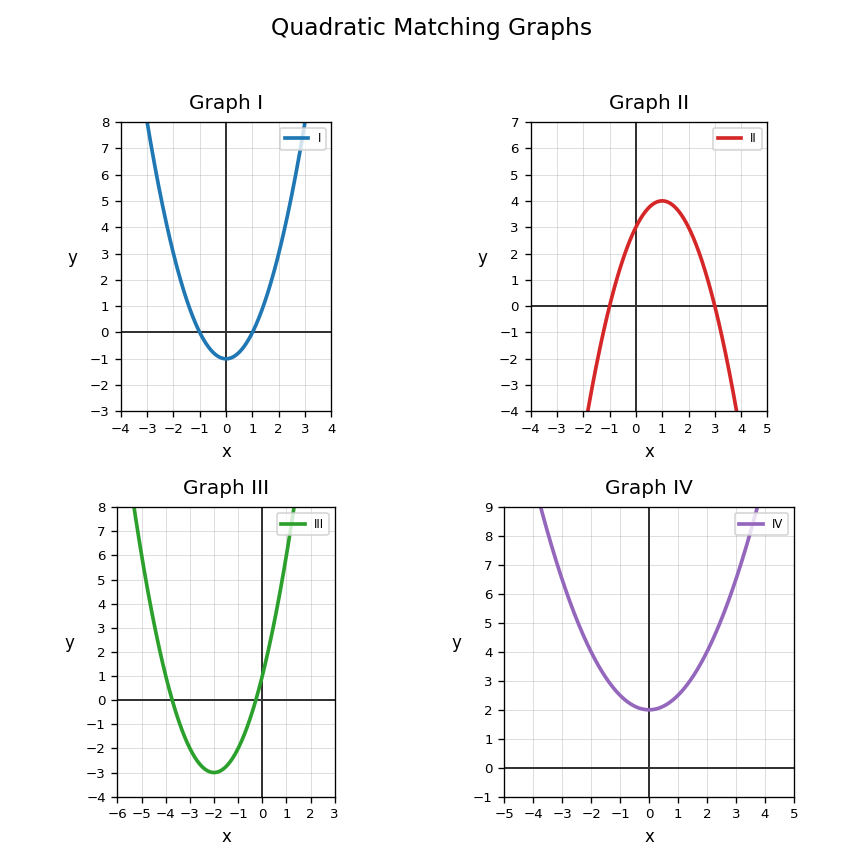
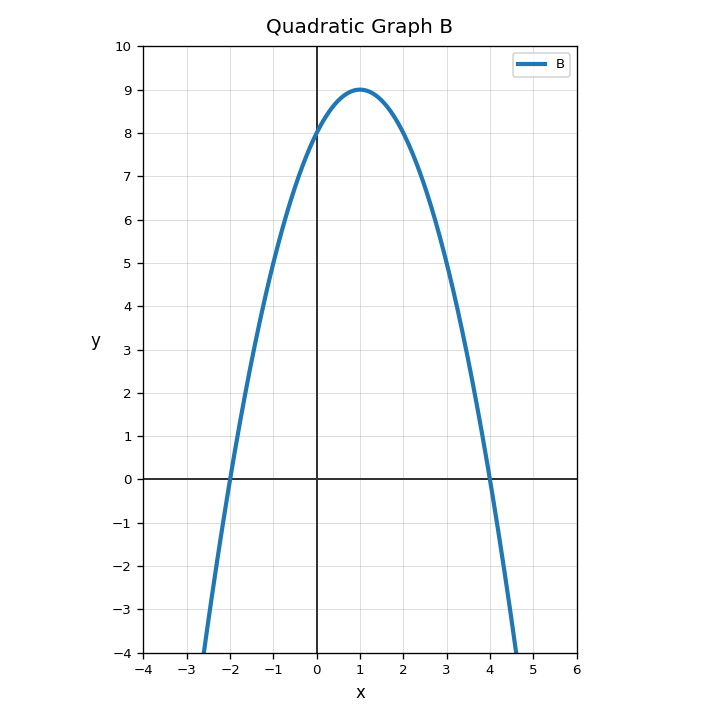

Tell whether the graph of $y=2x^2+3x-1$ would be a line or a parabola. How can you tell?
Match each rule to one graph in the figure. Explain one match using structure.

Use Graph B. Explain how the graph shows a maximum instead of a minimum, and connect that to the equation type.

Create a quadratic rule, a small table, and a description of the graph features that someone should look for. Explain how the representations connect.
Classify $$9x^3-4x$$ by number of terms.
Identify the coefficient of the $x^2$ term in $$7x^2-3x+4$$.
Combine like terms: $$5x^2+9-2x^2+4x-1$$
Multiply: $$-2x(5x-3)$$
Simplify.
$$(4x^2-x+8)+(-x^2+6x-3)$$
Multiply and simplify.
$$(x-3)(x+7)$$
Compare using an area model and the distributive property for $(x+2)(x+9)$. What does each method make easier to see?
Create a common polynomial-multiplication error and write a correction that would help a student understand the structure.
Is $g(x)=4f(x)$ a stretch or compression?
Complete the table for $g(x)=-x^2$.
| $x$ | -2 | -1 | 0 | 1 | 2 |
|---|---|---|---|---|---|
| $g(x)$ |
A student says $g(x)=-3f(x)$ only reflects the graph. Critique the statement.
Design a transformed quadratic that opens down and is narrower than $y=x^2$. Write the equation and justify it.